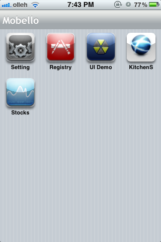
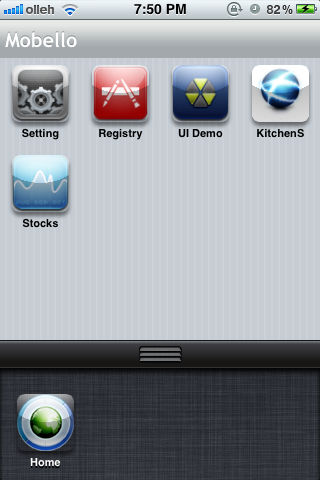
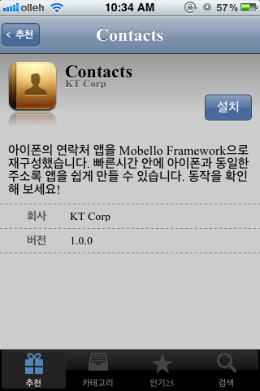
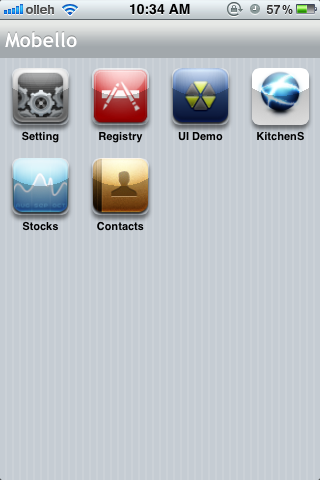
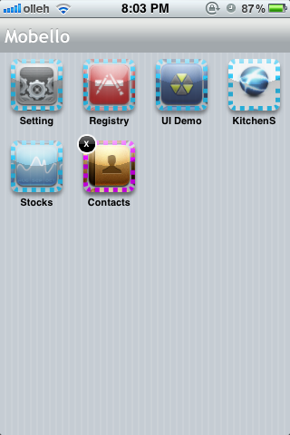
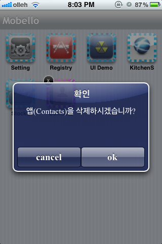

웹을 기반으로 개발된 앱들은 일반적으로 웹브라우저에서만 동작합니다. 이경우 일반적으로 웹브라우저에서는 한번에 하나의 앱만을 실행할 수가 있습니다. 다른 앱을 실행하고 싶다면 URL창에서 다른 앱의 주소를 입력해야만 합니다. 아이폰도 초기에는 한번에 하나의 앱만 실행할 수 있는 형태였지만 지금은 여러앱을 동시에 실행할 수 있도록 Multi-tasking Mode를 지원하고 있습니다. 웹 환경에서 개발된 앱들도 이런 기능을 활용할 수 있다면 활용성이 많이 높아질 것입니다.
Mobello는 웹브라우저상에서 동작하지만 자체 Runtime을 가지고 있어 아이폰처럼 Multi-tasking을 지원합니다. 이를 통해 여러개의 앱을 동시에 실행하고 SystemDock을 통해 현재 실행되고 있는 앱들간 자유로운 이동이 가능합니다. 이 문서는 Mobello에서 제공하는 Single tasking모드와 Multi-tasking모드에 대해 설명합니다.
목차:
Mobello는 페이지 기반으로 개발되는 일반적인 UI Framework과는 달리 Runtime을 통해 앱의 Lifecycle을 관리합니다. 즉, Runtime이 앱을 실행하고 사용자의 입력에 응답하고 마지막으로 종료하는 일을 담당합니다. Mobello에서 앱을 Single-tasking Mode로 실행하기 위해서는 브라우저 URL창에 다음과 같이 launcher.html 뒤에 실행하고자 하는 앱의 이름을 같이 기술합니다.
file:///[설치폴더]/launcher.html?app=xxx
만약 Mobell로가 C:\mobello 폴더에 설치되었다면 위의 URL은 file:///C:/mobello/launcher.html?app=xxx 와 같이 됩니다. 이때 xxx로 기술되는 앱의 이름은 설치폴더의 apps 디렉터리 밑에 있는 폴더명(앱명)이 됩니다. 아래의 apps폴더 구조에서 contacts 앱을 Single-tasking Mode로 실행하고자 한다면 file:///C:/mobello/launcher.html?app=contacts 와 같이 입력합니다.
[Mobello Framework] +-[apps] | +-[contacts] | +-[demo] | +-[flickr] | +- ... (sample apps) +-[lib] +-[shared] +-config.json +-launcher.html
Single-tasking Mode는 한번에 한개의 앱을 독립적으로 실행하는 구조로서 일반적이 웹앱과 동일하게 동작합니다. 아이폰의 경우 해당 앱을 [바탕화면에 추가] 메뉴를 통해 경우 바탕화면에 앱으로 설치할 경우 일반적인 앱들과 동일하게 사용할 수 있습니다.
Mobello 에서는 웹 기반이지만 여러 앱을 동시에 실행시키고 실행 중인 앱들간 자유롭게 이동할 수 있는 기능을 제공합니다. 이렇게 실행되는 형태를 Multi-tasking Mode라고 하며 아이폰에서 여러 앱을 동시에 실행하고 홈 버튼을 두번 눌러서 현재 실행중인 앱을 자유로이 이동할 수 있는 것과 유사합니다. Mobello는 기본적으로 Multi-tasking을 기본 실행모드로 동작합니다. Single-tasking Mode로 실행하기 위해서는 launcher.html다음에 실행하고자 하는 앱의 이름을 기술했지만 Multi-tasking Mode로 실행하고자 할 경우 다음과 같이 launcher.html만 실행하면 됩니다.
file:///[설치폴더]/launcher.html
아이폰의 경우 Multi-tasking Mode로 실행한다음 [바탕화면에 추가]를 통해 앱을 바탕화면에 설치한 다음 실행하면 다음 그림과 같이 현재 실행가능한 앱들이 Dashboard(바탕화면)에 설치된 상태로 나타납니다.

앱을 실행하고자 할 경우 해당 앱을 나타내는 Shortcut을 터치하면 바로 실행할 수 있습니다.
Multi-tasking Mode에서는 SystemDock이라는 기능을 통해 현재 실행중인 다른 앱으로 이동하거나 Dashboard로 복귀할 수 있습니다. SystemDock을 활성화 시키기 위해서는 화면 하단에 약 0.5초가 누릅니다. 이때 SystemDock 표시를 위한 핸들이 나타나며 핸들을 위쪽 방향으로 이동시키면 다음과 같이 SystemDock이 나타납니다. SystemDock은 현재 실행중인 모든 앱을 보여주며 실행중인 다른 앱으로 전환할 수 있도록 도와줍니다.

SystemDock에서 제일 왼쪽에 있는 Home Shortcut은 Dashboard(바탕화면) 이동하는 기능을 수행하며 새로운 앱이 실행될 때마다 SystemDock에 Shortcut으로 추가됩니다.
Mobello에서 한번 실행된 앱은 종료되기 전까지 현재 상태를 계속 유지시켜 줍니다. 따라서 SystemDock을 통해 현재 실행중인 앱에서 다른 앱으로 전환했다가 다시 이전에 작업하고 있던 상태로 되돌아 올 수 있습니다. 그리고 경우에 따라 현재 실행중인 특정 앱을 종료해야 할 경우가 발생하면 SystemDock을 통해 종료하고자 하는 앱을 약 0.5초간 누릅니다. 이때 아래 그림과 같이 SystemDock에 실행중인 앱들을 종료할 수 있도록  와 같이 오버레이가 출력됩니다. 삭제하고자 하는 앱의
와 같이 오버레이가 출력됩니다. 삭제하고자 하는 앱의  을 터치하면 현재 실행중인 상태를 종료하며 앱이 가지고 있던 모든 리소스들을 반환합니다.
을 터치하면 현재 실행중인 상태를 종료하며 앱이 가지고 있던 모든 리소스들을 반환합니다.

Mobello에서는 아이폰이 앱스토어를 통해 새로운 앱을 설치하는 것처럼 Registry 앱을 통해 앱을 독립적으로 설치할 수 있습니다. 이 기능을 활용할 경우 기존의 구조에 전혀 영향을 주지 않으면서 새로운 앱을 자유롭게 개발하여 Dashboard(홈화면)에 편리하게 추가할 수 있습니다. 따라서 앱의 개수가 늘어나더라도 쉽게 수용이 가능하며, 사용자의 취향에 따른 개인화를 가능하게 해 줍니다. 나아가 웹을 기반으로 하는 모바일 앱 포털로 활용하거나 사설 앱스토어를 쉽게 구성할 수 있도록 해 줍니다.
새로운 앱을 설치하기 위해서는 먼저 시스템 앱인 Registry 앱을 실행합니다. 설치할 수 있는 앱 목록에서 설치하고자 하는 앱(contacts)을 선택하면 다음 화면과 같이 설치할 수 있는 상세화면으로 이동합니다. 이때 설치 버튼을 터치하면 해당 앱이 Dashboard로 설치됩니다.

Dashboard에 설치된 앱들 중 Multi-tasking Mode로 최초 실행시 기본적으로 설치된 앱들은 제거할 수 없지만 이후 사용자가 직접 설치한 앱들은 삭제할 수 있습니다. 사용자가 설치한 앱을 삭제하기 위해서는 삭제하고자 하는 앱을 약 0.5초간 누릅니다. 이때 해당 앱을 삭제할 수 있도록  오버레이가 되며 이 오버레이를 터치하면 Dashboard에서 해당 앱이 삭제됩니다.
오버레이가 되며 이 오버레이를 터치하면 Dashboard에서 해당 앱이 삭제됩니다.

앱을 Multi-tasking Mode로 개발하면 다음과 같은 장점들이 있습니다.